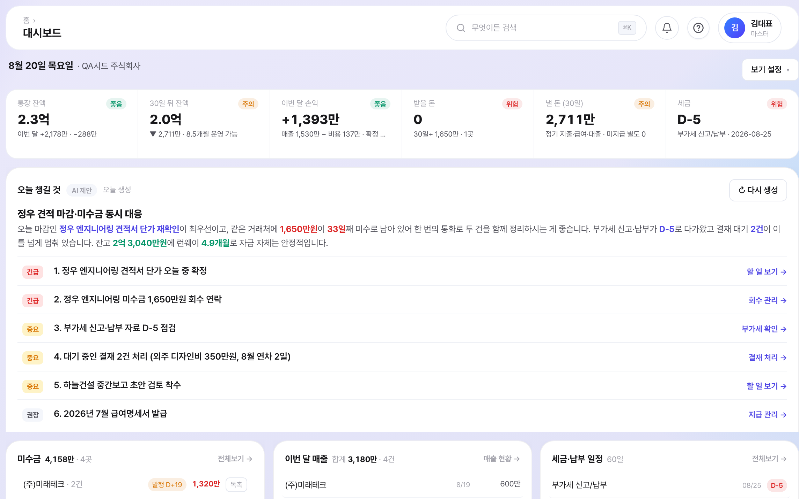
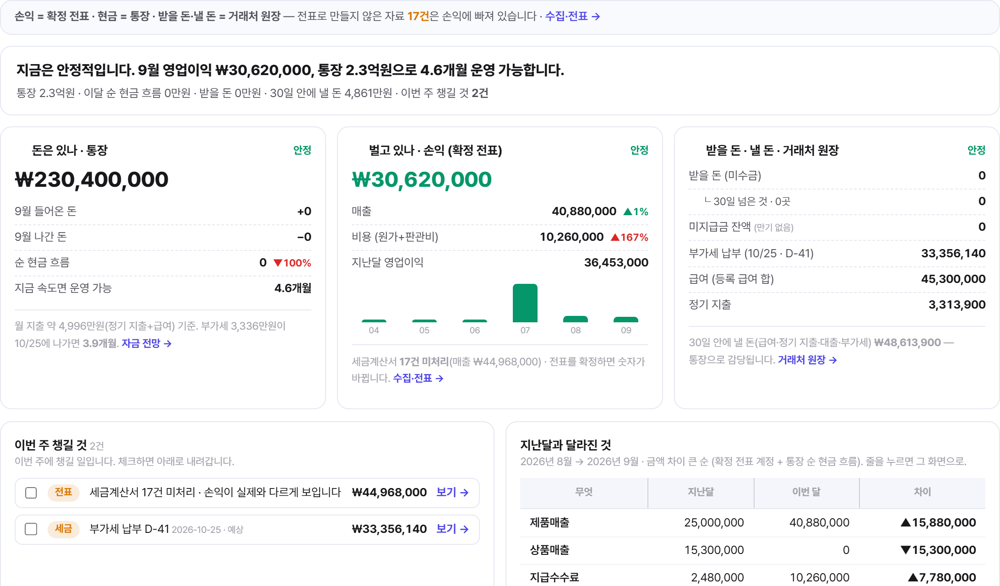
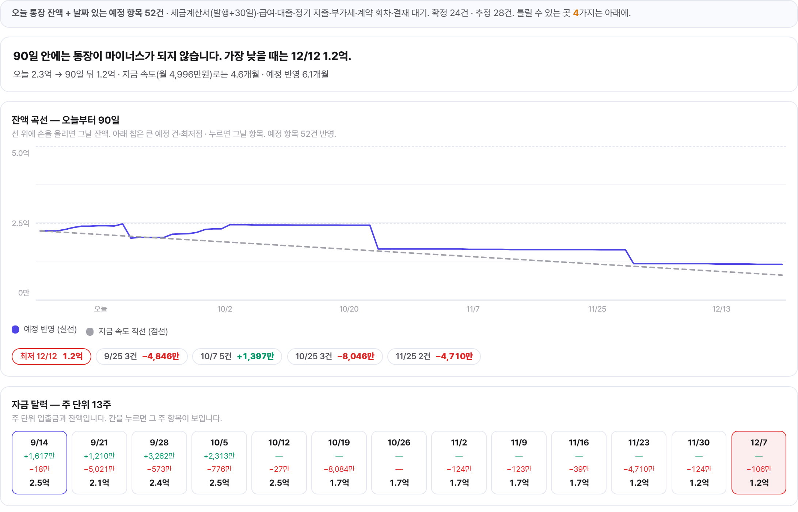
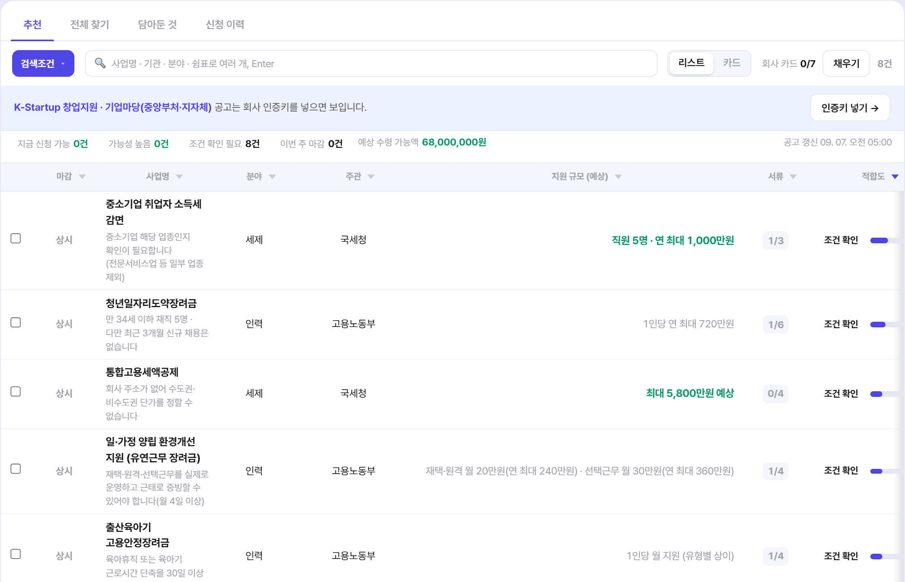
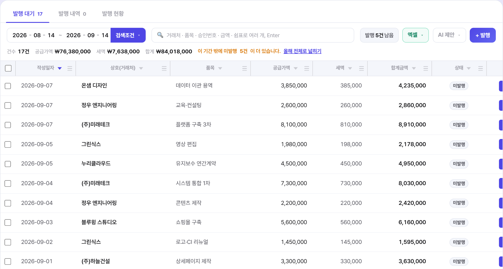
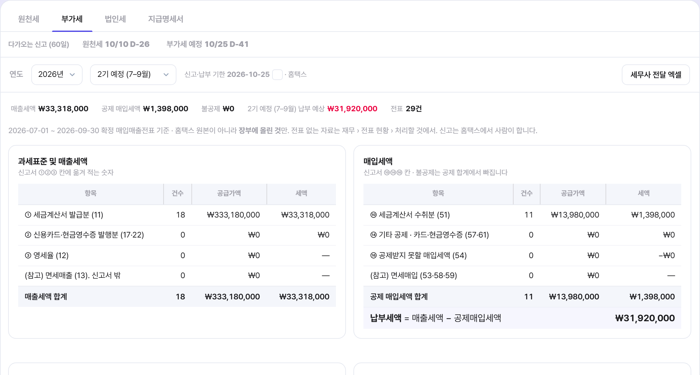
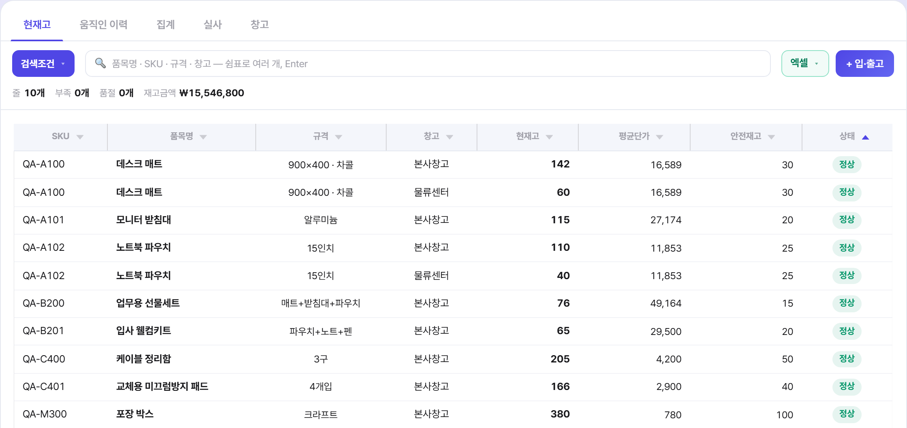
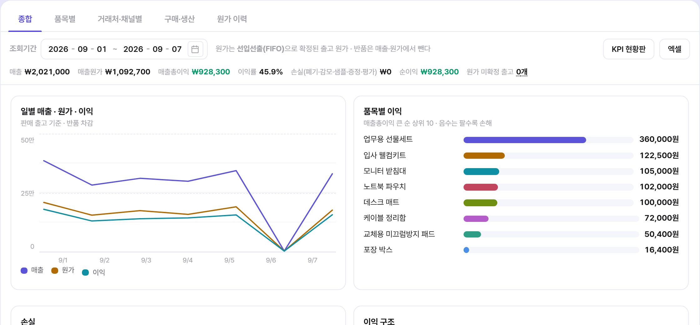
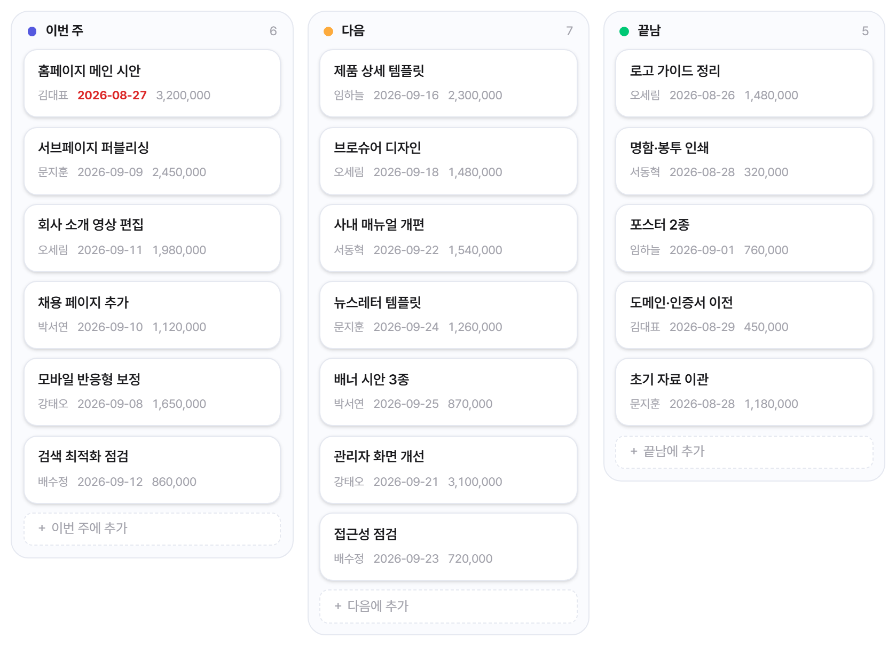
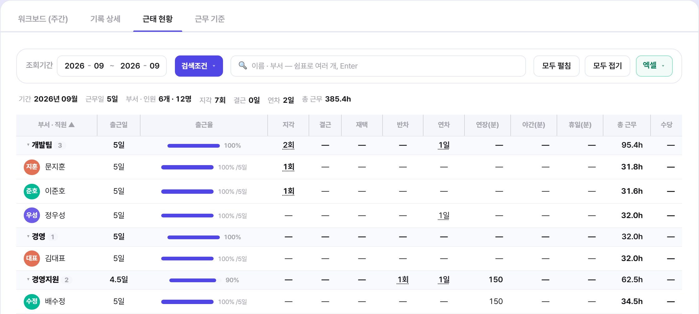

서비스 소개서 · 2026년 9월
회사 운영의 모든 것,
올인원 AI ERP 오너뷰
AI 자동화경영 현황 진단큐레이션
서비스 소개서 · 2026년 9월
운영사 (주)모티브이노베이션

업종에 관계없이 중소기업 운영에 필요한 메뉴를 단일 데이터 기반으로 제공합니다.
대시보드 · 알림 · 마이페이지
AI 참모 · 지원사업추천
통장 · 카드 · 수집·전표 · 세금·증빙
전표 · 고정자산 · 세무 신고
품목 · 창고 · 주문 · 판매 · 구매
생산 · 이커머스 · 이익관리
경영 요약 · 손익 현황 · 자금 전망
회계 자료 · 거래처 원장 · 부가세
일정·To-do · 프로젝트 · 결재 허브
전자계약 · 메신저 · 파일보관함
구성원·급여 · 근태 관리
근로계약·서식
회사 기초정보 · 구성원·초대
회계·세무 · 연동 · 보안 · 요금제
공지사항 · 사용 가이드
고객센터
일반적인 중소기업 업무 흐름 예시
금융·세무 데이터 수집부터 전표 초안까지
핵심 경영 지표 · 자금 전망
대표·실무자별 우선순위 업무
송금·발송은 자동 실행되지 않습니다 — 담당자 승인 필수

거래내역 수집·전표 — 예시 화면(가상 회사)


경영 요약 · 자금 전망 — 예시 화면(가상 회사)

대시보드 · 지원사업추천 — 예시 화면(가상 회사)


세금·증빙 · 세무 신고(부가세) — 예시 화면(가상 회사)


창고관리 · 이익관리 — 예시 화면(가상 회사)


프로젝트(칸반) · 근태 현황 — 예시 화면(가상 회사)
A사 — 제조·유통, 구성원 12명, 은행 계좌 3개·법인카드 2장 (가상 기업 예시)
| 업무 | 도입 전 | 도입 후 (오너뷰) |
|---|---|---|
일일 자금 확인 |
은행별 인터넷뱅킹 로그인 → 잔액·입출금 엑셀 정리 → 대표 보고 3단계 · 시스템 4개 |
자동 수집된 계좌 잔액·입출금을 대시보드에서 확인 담당자 작업 1단계 · 화면 1개 |
월 결산 |
거래내역 내려받기 → 엑셀 계정 분류 → 회계 프로그램 전표 입력 → 세무사 메일 전달 4단계 · 시스템 3개 이상 |
자동 수집 → AI 계정과목 추천 검토·승인 → 세무 파트너가 같은 화면에서 확인 담당자 작업 2단계 · 화면 1개 |
급여 지급 |
근태 엑셀 집계 → 급여·4대보험·원천세 계산 → 명세서 개별 발송 3단계 · 시스템 2개 이상 |
근태 자동 집계 → 급여 배치(4대보험·원천세 자동 계산) 확인 → 명세서 발송 담당자 작업 2단계 · 화면 1개 |
제품 사양 기준(2026년 9월). 고객 수·사용량 등 실적 수치는 포함하지 않았습니다.
| 항목 | 일반적인 ERP | 오너뷰 |
|---|---|---|
| 요금 체계 | 기능·모듈별 요금제 분리 판매가 많음 | 단일 유료 플랜으로 전 기능 제공 |
| 도입 방식 | 도입비·약정 계약이 붙는 경우가 많음 | 카드 등록 없이 무료 시작, 무료 플랜 기간 제한 없음 |
| 회계·세무 | 회계 프로그램 별도 구매·연동 필요 | 수집·전표·월 결산·부가세·원천세 신고 자료까지 통합 |
| 세무사 협업 | 원장·전표를 메일로 주고받음 | 세무 파트너가 동일 화면에서 확인 |
| AI 활용 | 부가 기능 또는 미제공 | 계정과목 추천·데일리 브리핑·자금 부족 예측 — 판단 근거 표시, 실행은 담당자 승인 |
특정 업체와의 비교가 아닌 일반적인 도입 형태 기준입니다.
카드 등록 없이 회원가입 후 바로 사용합니다.
무료 플랜은 기간 제한이 없습니다.